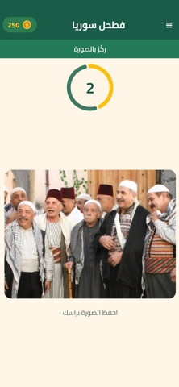
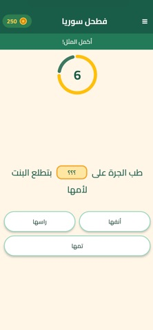
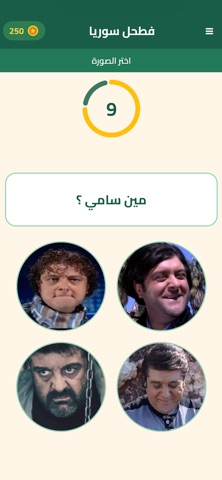

عن لعبة فطحل سوريا
فطحل سوريا لعبة تحديات من استوديو Mohanad Games، مبنية على ذاكرة التلفاز السوري والمسلسلات والمشاهد اللي علقت بالبال.
اللعبة فيها تحديات ومسابقات ومنافسة. كل يوم عنا مسابقة ولوحة متصدرين — تابعنا وخليك جاهز دائماً لأي تحدي.
- أسئلة عن المسلسلات والمشاهد والفنانين السوريين
- تحديات ومسابقات ومنافسة يومية
- لوحة متصدرين كل يوم
- تحميل مجاني على أندرويد وآيفون
صور من اللعبة



تحميل فطحل سوريا
حمّل لعبة فطحل سوريا مجاناً من المتاجر الرسمية:
أسئلة شائعة عن فطحل سوريا
ما هي لعبة فطحل سوريا؟
فطحل سوريا لعبة تحديات ومعلومات عامة عن ذاكرة التلفاز السوري، تشمل مشاهد المسلسلات وأسماء الفنانين والمشاهد المطبوعة بالذاكرة.
كيف أحمل فطحل سوريا؟
من Google Play للأندرويد، ومن App Store للآيفون.
هل لعبة فطحل سوريا مجانية؟
نعم، تحميل اللعبة مجاني على أندرويد وآيفون.
ما محتوى اللعبة؟
تحديات ومسابقات ومنافسة يومية، مع لوحة متصدرين وأسئلة عن المسلسلات والمشاهد والفنانين السوريين.
من طوّر فطحل سوريا؟
من تطوير استوديو Mohanad Games (مهند ناجح عطية). للتواصل: info@mohanadgames.com